Project 02 · Fall 2026
Fun with Filters
& Frequencies
Esther Ng Xin Yue
Part 1
Fun with Filters
Filters combine nearby pixels to reveal local change. I first implemented convolution directly, then used derivatives and Gaussian smoothing to detect meaningful edges.
Part 1.1
Convolutions from Scratch
I implemented same-size 2D convolution twice using NumPy only: first with four loops, then with two loops and a vectorized kernel sum. Both use zero-filled padding and explicitly flip the filter, so they compute convolution rather than correlation.
Four-loop implementation
kh, kw = kernel.shape
py, px = kh // 2, kw // 2
height, width = image.shape
padded = np.pad(image, ((py, py), (px, px)),
mode="constant") # zero fill
flipped = kernel[::-1, ::-1]
for y in range(height):
for x in range(width):
for ky in range(kh):
for kx in range(kw):
result[y, x] += padded[y + ky, x + kx] \
* flipped[ky, kx]Two-loop implementation
kh, kw = kernel.shape
py, px = kh // 2, kw // 2
height, width = image.shape
padded = np.pad(image, ((py, py), (px, px)),
mode="constant") # zero fill
flipped = kernel[::-1, ::-1]
for y in range(height):
for x in range(width):
window = padded[y:y + kh, x:x + kw]
result[y, x] = np.sum(window * flipped)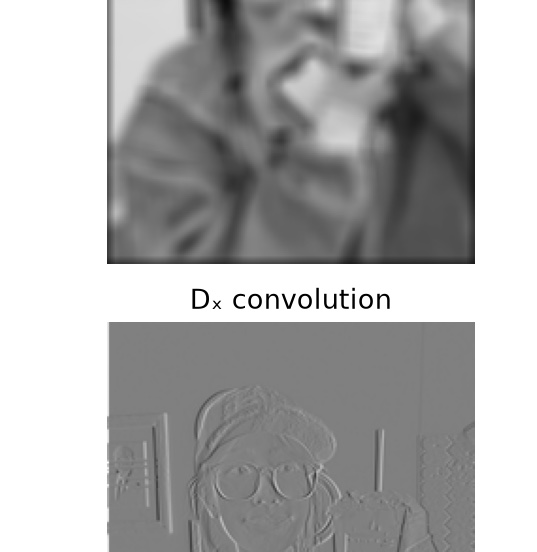
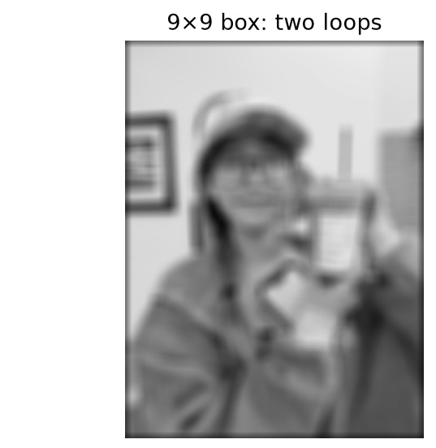
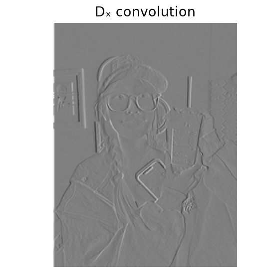
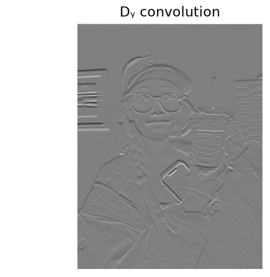
9 × 9 box-filter comparison against scipy.signal.convolve2d
| Implementation | Runtime | Maximum error vs. SciPy |
|---|---|---|
| Four loops | 0.723 s | 2.442 × 10−15 |
| Two loops | 0.069 s | 6.661 × 10−16 |
| SciPy built-in | 0.003 s | Reference |
Comparison: the tiny numerical differences are floating-point roundoff, so both NumPy implementations match SciPy. Every comparison uses zero-filled, same-size padding; the two-loop version is about 10× faster than four loops, while SciPy is fastest.
Part 1.2
Finite Difference Operator
I convolved the cameraman image with Dx and Dy, computed gradient magnitude, then thresholded it at 0.18. These are the raw finite-difference results, before any smoothing.
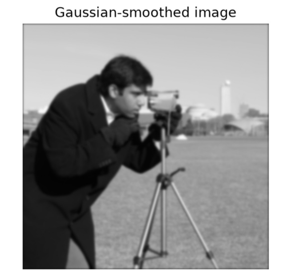
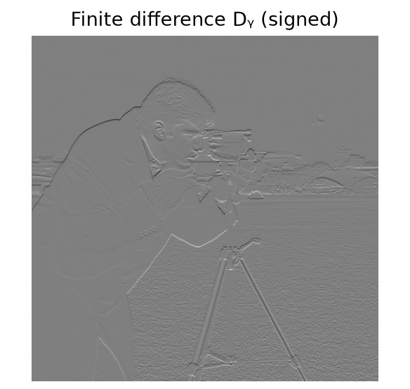
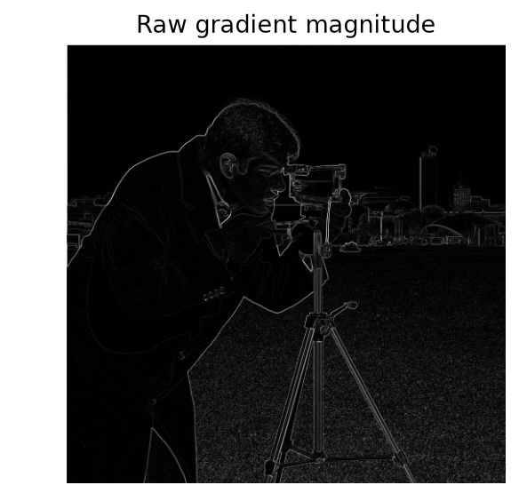
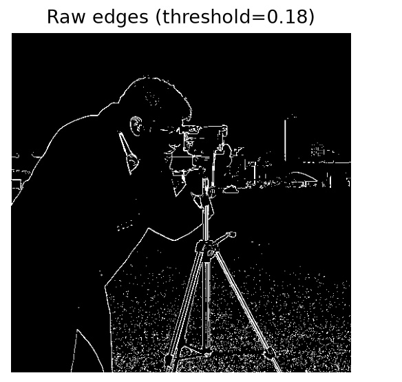
Result: finite differences reveal major boundaries but also respond to fine background texture and noise.
Part 1.3
Derivative of Gaussian (DoG) Filter
I first blurred the cameraman image with a 25 × 25 Gaussian (σ = 2) and repeated the finite-difference procedure. I then convolved the Gaussian with Dx and Dy to apply smoothing and differentiation in one pass.
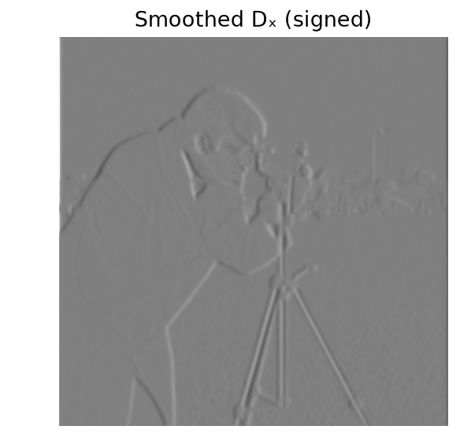
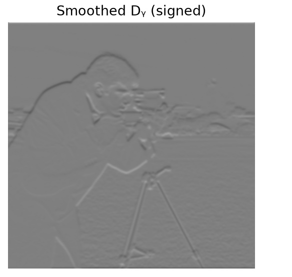
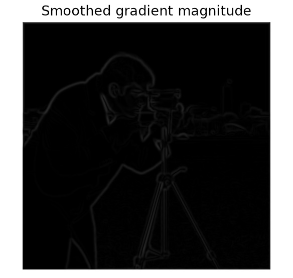
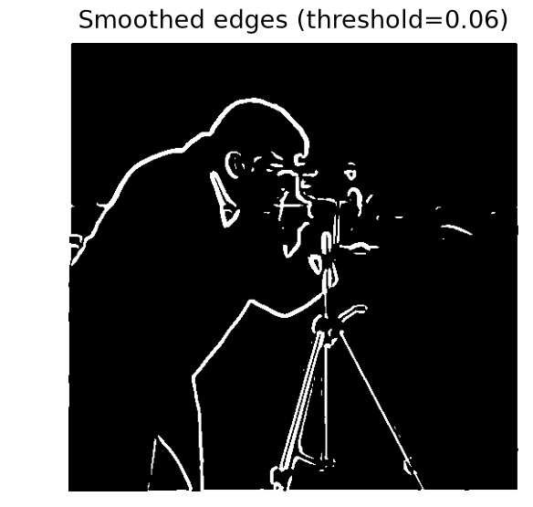
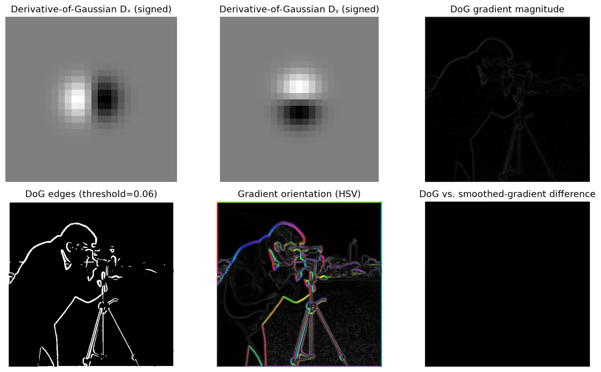
Result: smoothing removes many noisy responses. The DoG response matches blur-then-differentiate in the image interior to 2.257 × 10−15; only the padding boundary differs because the sequential method pads twice.
Part 2
Fun with Frequencies
Low frequencies describe broad shape and color; high frequencies hold fine detail. Changing their balance changes sharpness, perception, and transitions between images.
Part 2.1
Image Sharpening
Unsharp masking subtracts a Gaussian-blurred image from the original, then adds a controlled amount of the high-frequency residual back.
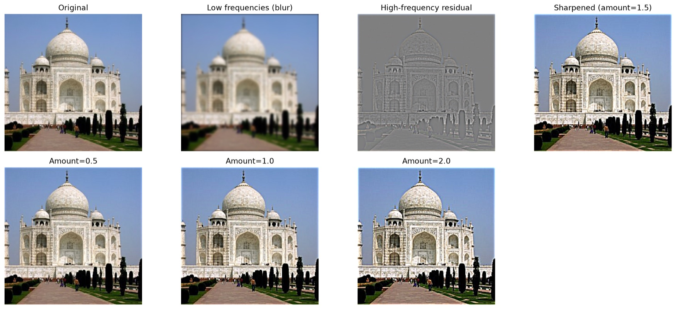
Custom blur-and-recover experiment +
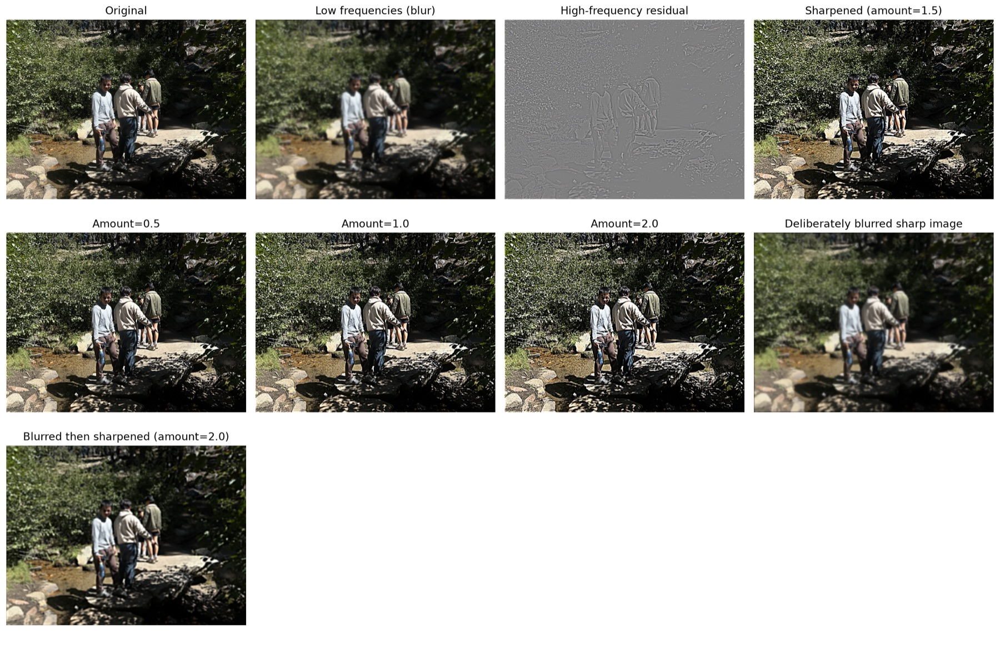
Part 2.2
Hybrid Images
A hybrid uses low frequencies from one aligned image and high frequencies from another. Viewing distance determines which interpretation dominates.
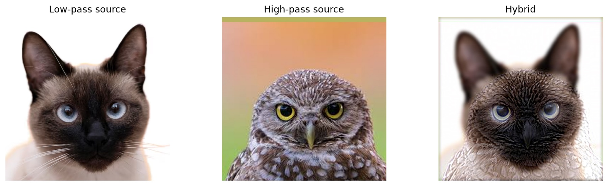
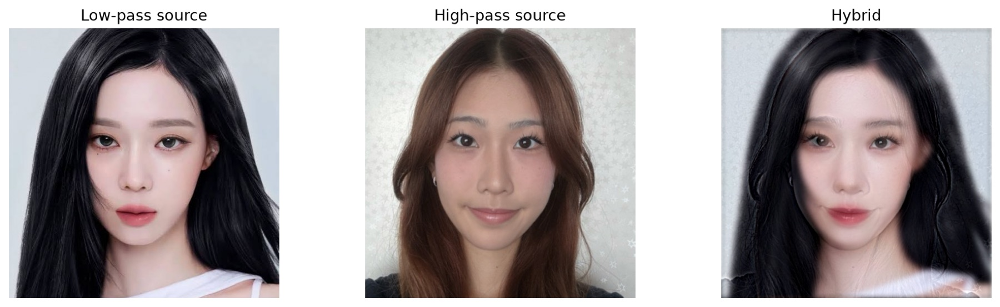
Derek + Nutmeg: required frequency analysis +
Derek supplies low frequencies (σ = 7); aligned Nutmeg supplies high frequencies (σ = 5). The Fourier panels show the separation between broad structure and fine detail.
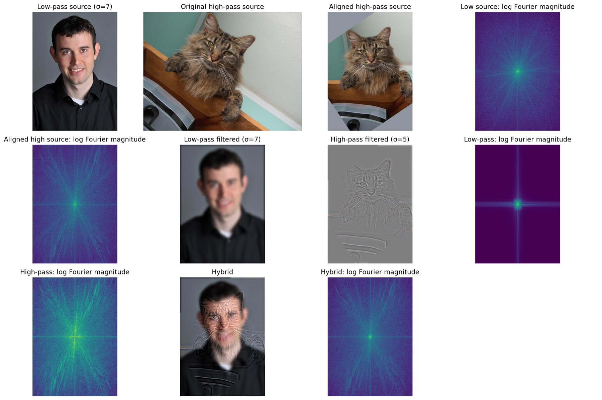
Part 2.3
Gaussian and Laplacian Stacks
Gaussian stacks repeatedly blur without downsampling. Laplacian stacks store the detail lost between adjacent Gaussian levels; their sum reconstructs the input.
Apple and orange stack visualizations +
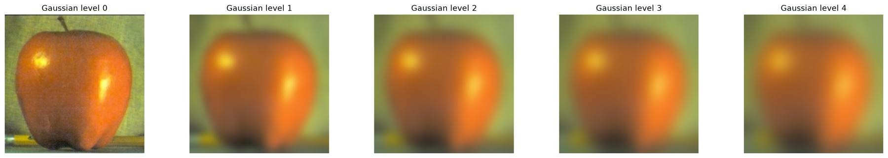
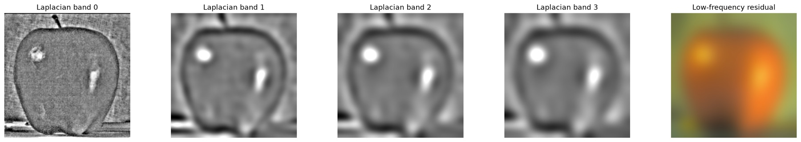
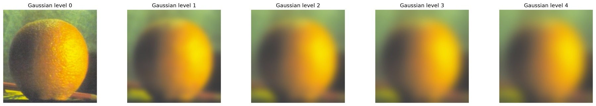
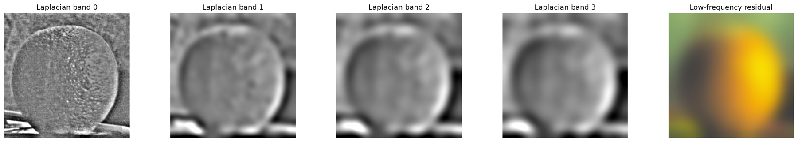
Part 2.4
Multiresolution Blending
I blend each Laplacian frequency band with the corresponding Gaussian-blurred mask level, then reconstruct the final image. This makes a transition smooth at broad scales while retaining sharp detail.
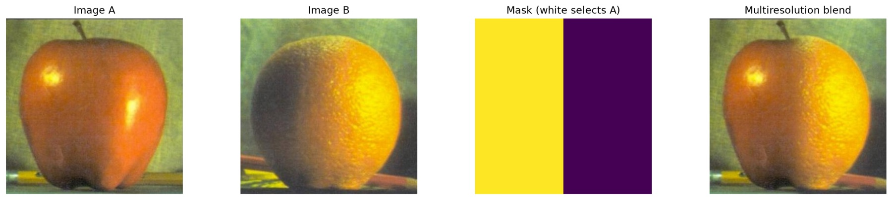
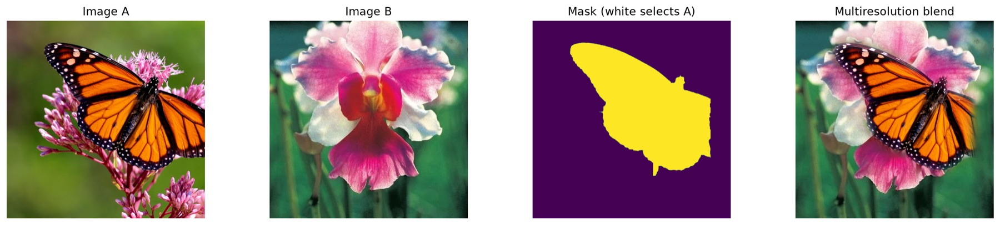
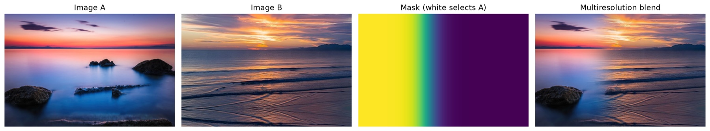
Band-by-band blending process +
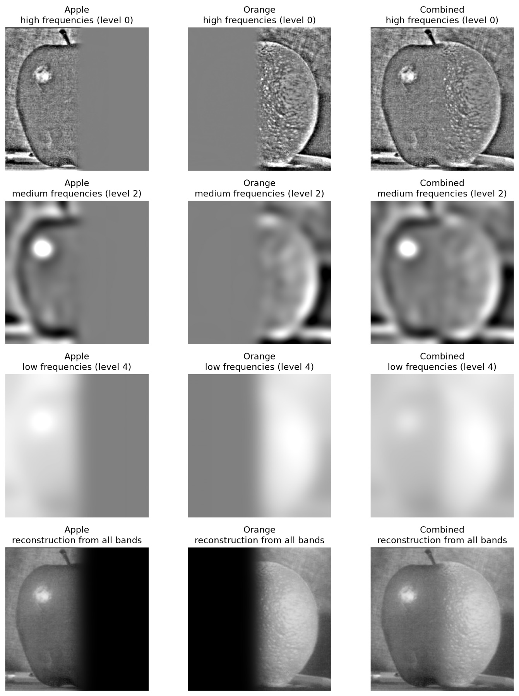
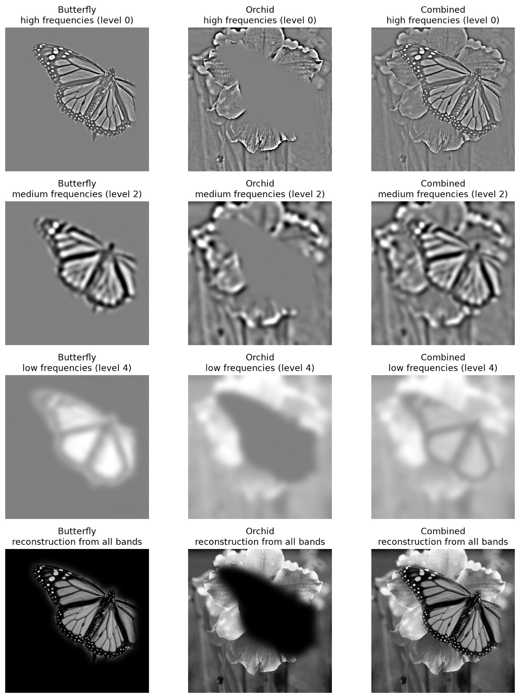
Takeaway
What I learned
Frequency is a design tool: it decides which details remain, which fade away, and how two images can become one coherent picture.